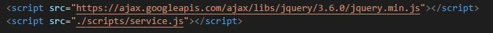
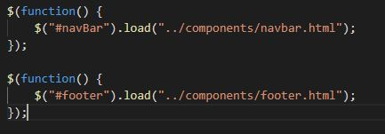

jQuery is a JavaScript library that helps us create interactive websites
The CDN, content delivery network can be found if you simply search jQuery. Using a CDN instead of downloading the library reduces the amount of loading time needed by your webpage. You can find the CDN for jQuery here jQuery CDN at google.com
We place the jQuery refence in our head tags as a link as seen below, we also reference in what file we have our jQuery, in this example it's in the scripts folder located in the same parent folder as the HTML file
This allows us to use jQuery in our JavaScript files and for this entire page I have used it to load HTML elements that I needed on every page without having to copy paste many lines of HTML into every single file.
The navigation bar and footer are both loaded into the page using jQuery. This gives us a more consistent website as it allows us to make changes to the navigation bar for example only in one place and all the pages using the navigation bar gets updated
